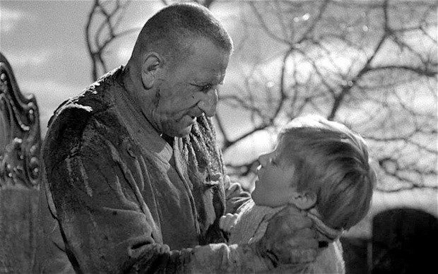

Friday, January the 25th, 2013
back to: title, date or indexes
The diary of an ignorant ornithologist, this day in 1946:
I had arranged to spend the morning birdwatching with Dennis, so shortly after daybreak I met him as arranged at his “hide”. This is a small, low, concrete pillbox at the edge of the marshes, from within which one has a sweeping view, but cannot oneself be seen. I was very impatient to spot some birds, so no sooner had we made ourselves comfortable than I snatched Dennis' binoculars and peered through them.
“Gosh!” I cried, “A marsh warbler!”
“Really?” said Dennis, “Let me take a look.”
And he snatched back the binoculars and peered through them. Then he emitted a great sigh, expressing all at once pity and exasperation, bafflement and resignation.
“Cleothgard,” he said, turning to look at me, “Just because it is at a marsh and is making a warbling sound does not make it a marsh warbler. Look again -” and he handed back the binoculars, “- and tell me, is it bewinged? Does it have a beak and feathers?”
I peered again, rapt, but had to confess that I was unable to see any of these telltale bird features.
“What you can see,” said Dennis, “is not a marsh warbler. Granted, it is a living thing at a marsh making little warbling sounds. But what in fact it is, is a little orphan child, out roaming the marshes at daybreak, and warbling, or singing tremulously, perhaps because it is a naturally cheerful orphan, or more likely from a nerve-racked desire to drown out the eerie morning marshland sounds of gust and creak and slosh. Hark now to the words of the little orphan's warbled song, and you will gather why he is afeared.”
I pricked up my ears and listened carefully.
Tra la la, tra la lee, sometimes I warble and sometimes I sulk
I hope I'm not accosted by an escaped convict from the hulk
And sure enough, as I watched I saw the orphan of a sudden accosted by a fierce bedraggled chain-clanking convict, newly escaped from a hulk moored out beyond the marshes. He bore a distinct resemblance to the Scottish actor Finlay Currie.
“Gosh!” I said, “A cassowary!”
Dennis thumped me on the head with a brick.

A cassowary and a marsh warbler
Hooting Yard on the Air, February the 7th, 2013 : “Who Was Captain Nitty?” (starts around 18:55)